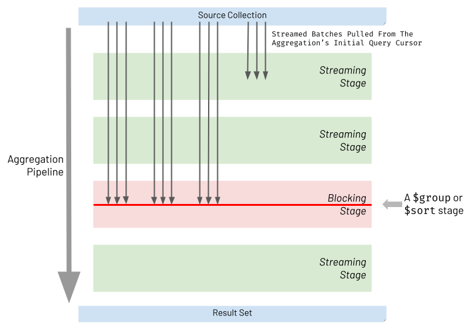

Pipeline Performance Considerations
As with any programming language, premature optimisation when prototyping an aggregation pipeline will often lead to an over-complicated solution which doesn't actually address the specific performance challenges that manifest. As described in the previous chapter, Using Explain Plans, the tool of choice to identify opportunities for effective optimisation is the aggregation's explain plan. This is typically used during the final stages of a pipeline's development, once the pipeline is functionally correct and producing the right data results.
However, being aware of some guiding principles regarding performance can still be useful whilst prototyping a pipeline. Importantly, such guiding principles are likely to be invaluable once the aggregation's explain plan is analysed and if it shows that the current pipeline is sub-optimal.
With this in mind, this chapter outlines three potentially 'big-ticket' considerations to make when creating or tuning an aggregation pipeline, which, when aggregating very large source data-sets, can often be the difference between an aggregation returning in milliseconds or a few seconds, versus returning in minutes, hours or even longer.
Be Cognizant Of Streaming Vs Blocking Stages Ordering
When executing an aggregation pipeline, the database engine pulls batches of records at a time from the initial query cursor that has been generated against the source collection. The database engine then attempts to stream each batch through the stages of the aggregation pipeline. For most types of pipeline stages, refereed to as streaming stages, a batch of records processed by a stage will then be streamed on to the next stage, without the stage trying to wait for all the other record batches to first arrive. However, two types of stages do have to block and wait for all batches of records outputted from a previous stage to arrive and accumulate together at that stage. These are referred to as blocking stages and specifically the two types of stages that block are:
$sort$group*
* actually when stating
$group, this also includes other less frequently used 'grouping' stages too, specifically:$bucket,$bucketAuto,$count&$sortByCount
The diagram below highlights the nature of streaming and blocking stages, where streaming stages allow batches to be processed and then passed through without waiting, whereas blocking stages wait for the whole of its input data set to arrive and accumulate before the stage then processes all this data together.

It is of course necessary for both $sort and $group to be blocking stages, as illustrated by the following examples:
-
$sort blocking requirement example: Take an example of a pipeline needing to sort people in ascending order of age. There would be a problem if the stage didn't wait to see the whole input data-set, and instead just sorted the people in one batch at a time before passing that sorted batch of people on to the next stage or final result, without waiting. The next batch of people records to arrive at the
$sortstage could well contain one or more people who are younger than the sorted ones already passed through. In the final result, these records should have appeared earlier in the final result set, but it would be too late. -
$group blocking requirement example: Take an example of a pipeline needing to group employees by one of the two work departments they belong to (either sales or manufacturing), and in the first batch of records arriving at the
$groupstage, each of the two departments groups and embeds a few employees each. There would be a problem if the$groupstage didn't wait to see the other batches and instead immediately streamed the current processed departments memberships on to the next stage or final result. The grouped department memberships output by the pipeline to the client application would be incomplete because later batches of people records are yet to still to arrive at the earlier$groupstage.
These necessary blocking stages don't just reduce aggregation execution time directly, by virtue of the fact that streaming is blocked. There is also another dimension to the performance impact incurred, related to memory consumption, which can ultimately reduce throughput and increase latency dramatically:
-
$sort memory consumption: For a
$sortstage to see all the input records at once, the host server must typically have enough capacity to hold the whole input data set in memory, which will be heavily dependent on the nature of the source data-set and how much the earlier stages of the pipeline have first reduced the data-set size. Also, multiple instances of the aggregation pipeline may be in-flight at any one time, in addition to other types of executing aggregations and database workloads, all competing for the same memory resources. If the source data-set is many gigabytes or even terabytes in size and it has not been possible for earlier stages to significantly reduce this size, it is unlikely that the host machines will have sufficient memory to support the pipeline and its blocking$sortstage. As a result, MongoDB enforces a$stagehas a limit of 100 MB of consumed RAM and throws an error if exceeded. For handling large data-sets theallowDiskUse=trueoption for the overall aggregation can be defined which results in sort operations spilling to disk where required, to not be constrained the 100 MB limit. However, the sacrifice here is significantly higher latency, and the aggregation execution time is likely to increase by orders or magnitude. There is one situation where this can be mitigated, if the$sortis not preceded by a$project,$unwindor$groupstage it can take advantage of an index for sorting, meaning it doesn't have to manifest the whole data set in memory (or overspill to disk). -
$group memory consumption: The
$groupstage has the potential to consume even more memory than a$sortoperation, if it attempting to group all records in the source data-set and retain all the data for each grouped record. This means that the output of the$groupstage would contain a larger size of data than the original input, because new groupings 'metadata' would be required too, and, for a period of time this would have all had to be held in memory by the$groupblocking stage. Taking the example before of people records, the$groupstage's output size would be the size of all the people records in the data-set, plus the size of the new departments grouping metadata. Like$sortstage there is a 100 MB RAM limit for the$groupstage, and the aggregation'sallowDiskUse=trueoption can enable the group operation to overspill to disk to avoid this limit, but with the similar higher latency consequences. However, in practicality, many types of grouping operations are primarily used to generate grouped summary data, not grouped itemised data. Therefore, in many situation where$groupstages are used, considerably reduced summary data-sets are produced, requiring far less memory than a$sortstage. For example, rather then the each department group holding a list of its employees, each group might just hold a count of employees in the department by using an accumulator operators. So, in reality, unlike sort operations, in many cases grouping operations will only require a fraction of the RAM, due only summary statistics being needed for each group.
In summary, try to move $sort & $group blocking stages to as late in the pipeline as possible. Then, hopefully due to earlier stages that first significantly reduce the number of records being streamed, these blocking stages have less records to process and hence have less thirst for RAM, resulting in an aggregation that completes quickly.
Avoid Unwinding & Regrouping Documents Just To Process Each Array's Elements
Sometimes it is necessary to transform documents from a source collection that each include an array field, where the main purpose of the aggregation pipeline is just to reduce the content of each array, in isolation, but in the same way. For example, the aggregation may just need to add together all the values of the array into a total, or retain the first or last element of the array only, or retain only one field from the sub-document that is in each array element, or any one of numerous other array reduction scenarios.
Bringing this to life more, imagine there is a product_orders collection where each document in the collection represents a product, and the list of orders is an array of elements against each product, as shown in the example below:
[
{
name: 'Asus Laptop',
orders: [
{
customer_id: 'elise_smith@myemail.com',
orderdate: 2020-05-30T08:35:52.000Z,
value: Decimal128("431.43")
},
{
customer_id: 'jjones@tepidmail.com',
orderdate: 2020-12-26T08:55:46.000Z,
value: Decimal128("429.65")
}
]
},
{
name: 'Morphy Richards Food Mixer',
orders: [
{
customer_id: 'oranieri@warmmail.com',
orderdate: 2020-01-01T08:25:37.000Z,
value: Decimal128("63.13")
}
]
}
]
Let's say that an aggregation is required to transform these documents to only include the customer_id in each order for each product, and to exclude the orderdate and value fields because they are surplus to requirements. The desired aggregation output might be:
[
{
name: 'Asus Laptop',
orders: [ 'elise_smith@myemail.com', 'jjones@tepidmail.com' ]
},
{
name: 'Morphy Richards Food Mixer',
orders: [ 'oranieri@warmmail.com' ]
}
]
One obvious way of achieving this transformation in an aggregation pipeline is to unwind the orders array for each record, producing an intermediate set of individual order records, and then group together again the orders records by product $name but only pushing the customer_id field back into the orders array and ignoring the orderdate and value fields. The required pipeline to achieve this is shown below:
// SUBOPTIMAL
var pipeline = [
{'$unwind': {
'path': '$orders',
}},
{'$group': {
'_id': '$name',
'orders': {'$push': '$orders.customer_id'},
}},
];
However, the pipeline is suboptimal because a $group stage has been introduced, which, as outlined earlier in this chapter, is a blocking stage. This will potentially increase memory consumption significantly and hence the execution time dramatically, if run against a large data-set. There is a far better alternative, which is to use one of the Array Operators instead. Array Operators are sometimes less intuitive to code, but critically, they avoid requiring the need to introduce a blocking stage into the pipeline. As a consequence they are significantly more optimal, especially for large data-sets. Shown below is a far more efficient pipeline, using the $map array operator, rather then the $unwind/$group combination, to produce the same outcome:
// OPTIMAL
var pipeline = [
{'$set': {
'orders': {
'$map': {
'input': '$orders',
'as': 'order',
'in': '$$order.customer_id',
}
},
}},
];
There should never be the need to use an $unwind/$group combination in an aggregation pipeline just to transform an array of elements contained in each document. Instead, use Array Operators to avoid introducing a blocking stage, which, when a pipeline is handling more than 100MB of in-flight data will result in magnitudes of reduction in execution time. It may even mean the difference between being able to achieve the required business outcome, using an aggregation, versus having to abandon the whole task as being unachievable.
In summary, the primary use of an $unwind/$group combination is to correlate patterns across many records, rather than transform the content inside each input record in isolation. An example of an appropriate use of $unwind/$group is shown in this book's Unpack Array & Group Differently example.
Encourage Match Filters To Appear Early In A Pipeline
As discussed in this book's Using Explain Plans chapter, the database engine will do its best to optimise the aggregation pipeline at runtime, with a particular focus on moving the $match stage contents to the top of the pipeline, if possible, to form part of the filters that are first executed as a query by the aggregation. This helps to maximise the opportunity for an index to be optimally leveraged at the start of the aggregation. However, it may not always be possible to promote $match filters in such a way without changing the meaning and resulting output of an aggregation.
Sometimes there are situations where $match stage is defined later in a pipeline and is performing a filter on a field which was only manifested part way into the pipeline and therefore wasn't present in the source collection that the aggregation operated on. For example, perhaps a $group stages creates a new total field based on an accumulator and the $match stage then looks for records where the total is greater than 1000. Or perhaps a $setstage computes a new total field value based on adding up all the elements of an array field in the same document, and the $match then looks for records where the total is less than 50.
At first glance, it may seem like nothing can be further done to optimise the pipeline by promoting the position of a specific $match stage, and sometimes that will be the reality. In other situations though, there may be a missed opportunity where a refactoring is indeed possible to enable such an optimisation.
Take the following trivial example of a collection of customer orders documents:
[
{
customer_id: 'elise_smith@myemail.com',
orderdate: 2020-05-30T08:35:52.000Z,
value: Decimal128("9999")
},
{
customer_id: 'elise_smith@myemail.com',
orderdate: 2020-01-13T09:32:07.000Z,
value: Decimal128("10101")
}
]
Let's assume the orders are based on a Dollars currency, and each value field shows the order's value in cents. A pipeline may have been built to show all orders where the value is greater than 100 dollars:
// SUBOPTIMAL
var pipeline = [
{'$set': {
'value_dollars': {'$multiply': [0.01, '$value']},
}},
{'$unset': [
'_id',
'value',
]},
{'$match': {
'value_dollars': {'$gte': 100}, // Peforms a dollar check
}},
];
Although the collection has an index defined for the value field (which is in cents), the $match filter for this pipeline is based on a computed field, value_dollars and hence, if you run the explain plan for the this aggregation, you will see that the $match filter has not been pushed to the top of the pipeline and an index has not been leveraged. The $match stage filtering on value_dollars can at best only by pushed upwards at runtime by the aggregation engine to just after the $set stage, and not to the start of the pipeline. MongoDB's aggregation engine is clever enough to track dependencies for a particular field referenced in multiple stages in a pipeline. Hence it is able to establish how far up the pipeline it can promote fields without risking a change in the external behaviour and outcome of the aggregation. In this case it knows that the $match stage cannot be pushed ahead of the set stage which it depends on.
By now it is probably obvious that in this example, as a developer, you can easily make a pipeline modification that will enable this pipeline to be optimised without changing the intended outcome of the pipeline. For this pipeline, simply by changing the $match filter to be based on the source field value being greater than 10000 cents, rather than being based on the computed field value_dollars greater then 100 dollars, and ensuring the $match stage appears before the $unset stage (which removes the value field) it is enough to allow the pipeline run efficiently. Below is the pipeline after being optimised by the developer:
// OPTIMAL
var pipeline = [
{'$set': {
'value_dollars': {'$multiply': [0.01, '$value']},
}},
{'$match': { // Moved to before the $unset
'value': {'$gte': 10000}, // Changed to not perform a cents check
}},
{'$unset': [
'_id',
'value',
]},
];
This pipeline produces the exact same results but if you were to look at its explain plan you now would see that the $match filter has been pushed to the top of the pipeline, when executed, and the index on value is now being leveraged. For completeness, in this case, the developer might as well move the modified $match stage to be the first stage in the pipeline explicitly, but this wasn't mandatory, as can be seen by the explain plan. The aggregation runtime has now been able to perform that optimisation itself because the $match stage is no longer 'blocked' by a dependency on computed field dependency.
There may be some cases, where it isn't possible to unravel a computed value in such a way entirely. However, it may still be possible to include an additional $match stage, to perform a partial match, earlier in the pipeline. For example, lets say a computed field masks a sensitive date_of_birth field into a new masked date field by adding a random few days to the date, up to a maximum of 7 days. An existing $match stage's filter in the pipeline might already have been defined to only include records where masked date is greater than 01-Jan-2020. At this point, as a manual refactoring optimisation, an additional (not replacement) $match can be added, right at the start of the pipeline, with the filter date_of_birth > 25-Dec-2020 (7 days before the previously existing $match filter). This doesn't mean that the output of the overall aggregation has changed with potentially more records being output. This is because the original $match stage still exists in the pipeline to catch any stragglers, but now, early in pipeline, there is partially effective filter, which is leveraging an index, and which won't necessarily filter out all undesired records, but it will quickly filter out the vast majority of them, leaving any records from the remaining 7 days window of time to be filtered out as normal later in the pipeline.
In summary, if you have a pipeline leveraging $match stages and the explain plan shows the pipeline is not being optimised to promote the $match filter to be at the start of the pipeline (and leveraging an index), explore whether the match filter is based on a computed field, from say a $group or $set stage, and whether instead, it can be fully or partly unravelled and based on a source field's value.